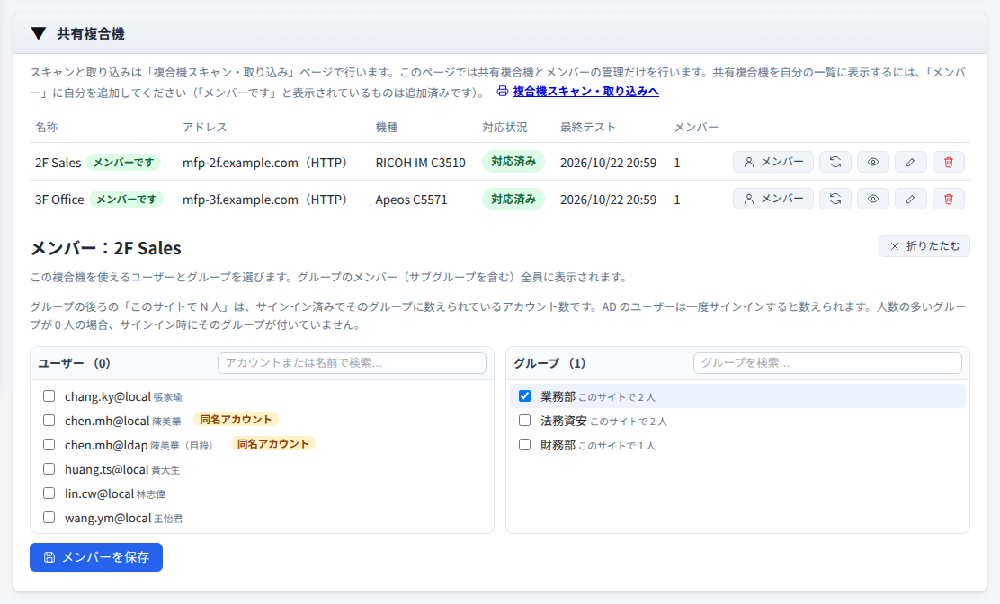
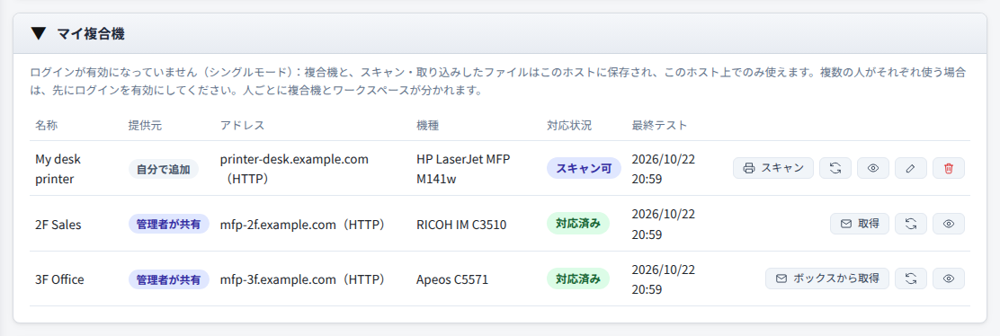
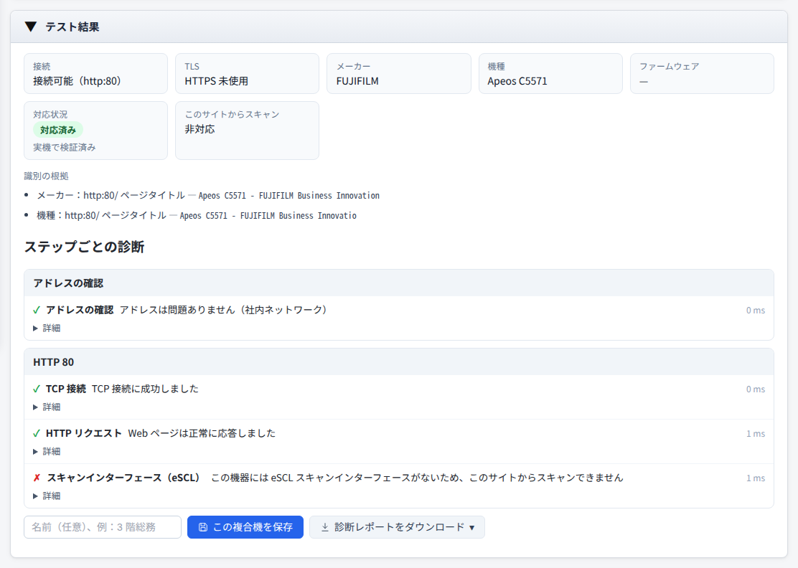
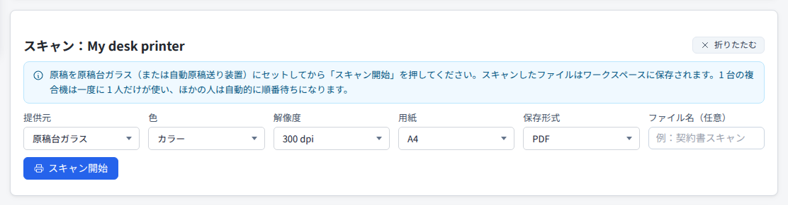
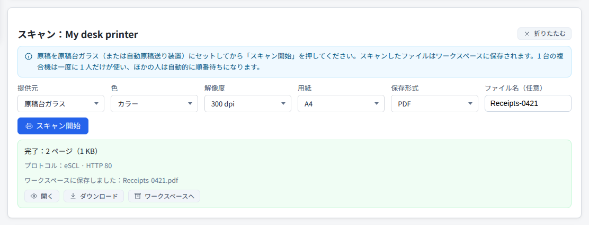
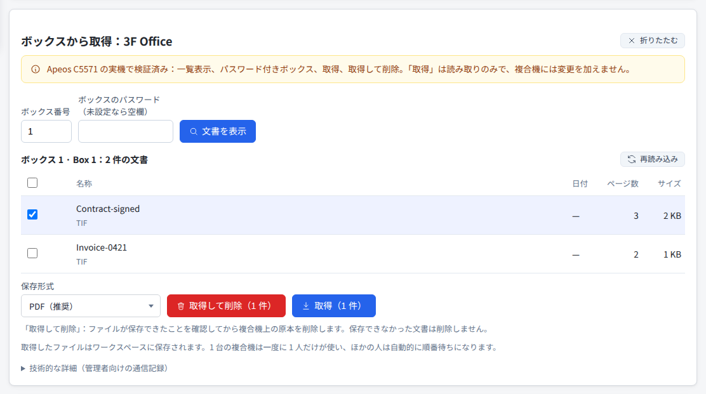
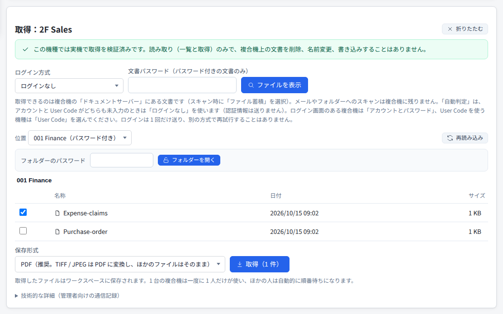
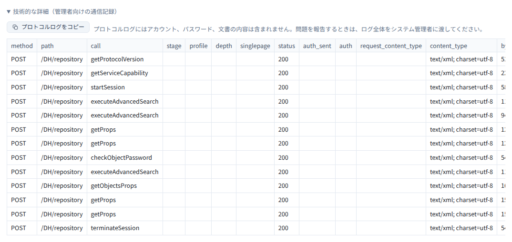

複合機スキャン・取り込み
ログインを有効にすると、人ごとに複合機の一覧とワークスペースが分かれます。このシステムを複数の人が使うサーバーとして運用しているのにログインを有効にしていないと、全員が 1 つのワークスペースを共有し、サイトにアクセスできる人なら誰でもスキャン・取り込みしたファイルを見られるため、機密情報や個人情報を含む文書は漏えいしたのと同じです。
人ごとに複合機の一覧とワークスペースがあり、管理者は共有複合機を設定してメンバーを指定できます。
このページスキャンした文書を自分の手元に届ける一般的な方法は 3 つありますが、それぞれに難点があります。
複合機ごとにメールサーバーと送信アカウントの設定が必要で管理が手間です。大きな文書は添付ファイルやメールボックスの容量上限を超えて送れないことがよくあります。
共有フォルダーには多くの人がアクセスできるため、契約書や人事資料などの機密文書を置くと誰でも開いたり持ち出したりできます。
USB メモリーは紛失しやすく、マルウェアを持ち込むおそれもあります。セキュリティ規定で使用を制限している組織も少なくありません。
複合機スキャン・取り込み：このサイトから複合機でスキャンしたり、複合機に保存された文書を取り出したりできます。ファイルは自分のワークスペースにだけ保存され、そのまま OCR、結合、圧縮、翻訳に使えます。
しくみ
複合機、このサイト、あなたのワークスペースは同じ社内ネットワークにあり、ファイルはクラウドサービスを経由せず、複合機から直接ワークスペースに入ります。
- 共有複合機を設定し、「メンバー」で使える人（ユーザー・グループ・組織単位）を決めます
- ユーザーが IP アドレスを入力して自分で複合機を追加できるかどうかを決める（既定はオン。オフにすると全員が共有複合機だけを使う）
- 接続テストのステップごとの診断と診断レポートで、つながらない原因を調べます
- 「複合機スキャン・取り込み」ページに、自分で追加した複合機と管理者が共有した複合機が表示されます
- 管理者が許可していれば、複合機の IP アドレスを入力して自分で追加することもできる（自分のアカウントだけに表示）
- 「スキャン」でこのサイトからスキャンし、「取得」で複合機に保存された文書を取り込みます
- 取り込んだファイルはワークスペースにあり、開く・ダウンロード・ほかのツールで使えます
管理者：共有複合機の設定
「設定 → 共有複合機」で一度作成してメンバーを指定すると、メンバーは自分の「複合機スキャン・取り込み」ページで使えるようになります。
- 1
アドレスを入力して接続テスト
複合機の IP アドレスまたはホスト名を入力し、「接続テスト」を押します。トップページとスキャンインターフェースの機能一覧を読むだけで、認証情報は送りません。
- 2
機種を確認して保存
メーカー、機種、対応状況を確認し、「共有複合機として保存」を押します。
- 3
メンバーを設定
「メンバー」でユーザーやグループを選びます。グループの横の「このサイトで N 人」は、そのグループに数えられているアカウント数です。
- 4
自分も追加する
管理者もメンバーに入っていないと、自分の「複合機スキャン・取り込み」ページには表示されません（「メンバーです」と表示されます）。

アカウント@ソースで表示し、同名のものには「同名アカウント」と表示します。グループにはこのサイトでの人数を表示します。全員に共有複合機だけを使わせるには、同じページの「利用設定」で「ユーザーによる複合機の追加を許可」をオフにします。管理者自身には影響しません。
ユーザー：マイ複合機
一覧には自分で追加した複合機（自分のアカウントだけに表示）と管理者が共有した複合機があり、対応状況とできる操作が同じ行に表示されます。

- 1
自分の複合機を追加
「複合機を追加」にアドレスを入力し、「接続テスト」を押します。
- 2
結果を確認
メーカー、機種、対応状況、このサイトからスキャンできるか、各ステップの診断を確認します。
- 3
保存
わかりやすい名前を付けて「この複合機を保存」を押します。別のコンピューターでも同じアカウントでサインインすれば表示されます。

このサイトからスキャン
eSCL 対応の複合機には「スキャン」があります。ここで設定を選ぶと複合機がスキャンを始め、結果はそのままワークスペースに入ります。
- 1
原稿をセット
原稿を原稿台ガラスに置くか、自動原稿送り装置に入れます。
- 2
設定を選ぶ
「スキャン」を押し、原稿の位置、カラー、解像度、用紙、PDF または JPEG を選びます。ファイル名も先に付けられます。
- 3
スキャン開始
「スキャン開始」を押します。使用中の人がいれば自動で順番待ちになり、前に何件あるかが表示されます。
- 4
ワークスペースに保存
完了したら開く・ダウンロードするか、ワークスペースで続けて処理できます。


取得：複合機に保存された文書を取り込む
まず複合機のパネルで文書をボックス、ドキュメントサーバー、または文書ボックスに保存し、このサイトで「取得」を押します（FUJIFILM は「ボックスから取得」）。
- 1
複合機に保存
メーカーに応じて、パネルでボックス、ドキュメントサーバー、文書ボックスに保存します（下の「メーカー別」を参照）。
- 2
サインイン情報を入力
パネルの表示に合わせてボックス番号、アカウント、User Code を入力します。送信は一度だけで、誤っていればそこで止まります。
- 3
一覧表示と場所の選択
「ファイルを表示」を押します。フォルダーは「位置」で切り替え、パスワード付きのフォルダーはパスワードを入力して「フォルダーを開く」を押します。
- 4
選んで取得
必要な文書を選び、PDF（推奨）を選んで「取得」を押すと、ファイルがワークスペースに保存されます。



メーカー別の取得方法
「対応済み」は実機で取得を検証済みの機種、「試験機能」はメーカーのマニュアルやツールの分析に基づくもので、まだ実機で検証していません。
| メーカー | 方式 | 複合機での保存方法 | 入力するもの | 対応状況 |
|---|---|---|---|---|
| FUJIFILM | 本体ボックス | パネルで「ボックス保存」を選び、指定のボックスに保存します | ボックス番号。パスワードはボックスに設定されている場合だけ | 対応済み：Apeos C5571（同シリーズ C7071、C6571、C4571、C3571、C3071、C2571）。「取得して削除」に対応 |
| RICOH | ドキュメントサーバー | パネルで「フォルダー送信」と「文書蓄積」を選び、ドキュメントサーバーの共有フォルダーまたは機器のフォルダーに保存します | ログイン方法（ログインなし、アカウントとパスワード、User Code）。フォルダーのパスワードは設定されている場合だけ | 対応済み：IM C2000、IM C2010、IM C2510、IM C3500、IM C3510。その他の機種は試験機能 |
| KYOCERA | 文書ボックス | カスタムボックスに保存します（ハードディスクまたは SSD を搭載した機種） | 複合機のアカウントとパスワード。ボックスのパスワードは設定されている場合だけ | 試験機能。カスタムボックスのない機種では、ポーリングボックスは現在一覧表示のみ |
| Canon | Advanced Box | アドバンスドボックスの共有スペースまたは個人スペースに保存します | 複合機のアカウントとパスワード | 試験機能（WebDAV または SMB） |
| Konica Minolta | 共有ボックス | 共有ボックスに保存します | ボックスのアカウントとパスワード | 試験機能（SMB） |
| SHARP | NAS フォルダー | 複合機の NAS フォルダーに保存します | 複合機のアカウントとパスワード | 試験機能（SMB） |
| eSCL 対応機種 | このサイトからスキャン | 事前の保存は不要で、このサイトで「スキャン」を押します | 認証情報は不要 | スキャン可（HP、Epson、Brother など eSCL 対応機種） |
セキュリティとプライバシー
複合機には契約書や給与明細などがよく保存されているため、すべての手順を最も慎重な方法で行います。
複合機のアドレスは社内ネットワークに限ります。接続テストはトップページとスキャンインターフェースの機能一覧を読むだけで、認証情報は一切送りません。
取得時に入力した認証情報はその回だけ使います。記憶するのはボックス番号や信頼した証明書などの設定で、アカウントとともに保存し、パスワードは含みません。
アカウント、ボックス、フォルダーのパスワードが誤っていればそこで止まり、方法を変えて再試行しないため、連続した誤入力で複合機のアカウントがロックされることはありません。
取得は一覧表示とダウンロードのみで、削除や名前の変更はしません。FUJIFILM だけは「取得して削除」を選べ、保存を確認してから削除します。
1 台の複合機は一度に 1 人ずつ処理し、ほかの人は自動で順番待ちになるため、互いに中断されません。
誰がいつどの複合機でスキャン・取得し、どの原本を削除したかは監査ログに記録されます（パスワードと文書の内容は記録しません）。
よくある質問
問題が解決しないときは、まずこちらをご覧ください。
ログインなし（シングルモード）で使うには
シングルモードは、ひとりが自分のコンピューターで使い、サービスがこのコンピューター（127.0.0.1）だけで受け付けている場合にのみ適しています。手順と注意事項はシングルモードガイドをご覧ください。
管理者が共有した複合機が表示されない
ページの「現在のアカウント」を確認してください。同じ人の AD、SSO、ローカルのアカウントは別のアカウントで、メンバーには実際にサインインしているアカウントを追加する必要があります。管理者は所属グループを追加することもできます。グループに「このサイトで 0 人」と表示される場合は、サインイン時にそのグループが付いていません。変更後はタブに戻ると一覧が更新されます。
複合機を削除すると誰に影響するか
自分で追加した複合機（追加元「自分で追加」）は自分にだけ表示されるため、削除しても誰にも影響せず、同じ機器の共有複合機もそのまま使えます。共有複合機（追加元「管理者が共有」）は、管理者が「設定 → 共有複合機」でのみ削除でき、削除するとすべてのメンバーが見ることも使うこともできなくなります。どちらの場合も、その複合機のスキャン・取り込みの履歴は残り、「除去済み」と表示されます。
接続テストに失敗する、ファイルが表示されない
接続テストのステップごとの診断で、失敗したステップから調べてください。診断レポート（txt、md、json、html、pdf）をダウンロードして管理者に渡すこともできます。KYOCERA は複合機で 9091 または 9090 番ポートの文書サービスを有効にする必要があります。FUJIFILM であるポートが 406 を返す場合は、別の接続方法を選んでください。
RICOH のフォルダーにパスワードが必要
「位置」でそのフォルダーを選び、フォルダーのパスワードを入力して「フォルダーを開く」を押します。誤ったパスワードは自動で再試行しないので、確認してからもう一度入力してください。
一覧に「再テスト推奨」と表示される
識別ルールが更新されましたが、この機器は以前のテストで機種を識別できませんでした。「再テスト」を押すと新しいルールで判定します。
取り込んだファイルはどこにある？
あなたのワークスペースにあります。開く・ダウンロードするか、ほかのツールで直接ワークスペースのファイルを選べます。保存期間は管理者が設定します（既定は 24 時間）。
問題を報告する
「技術的な詳細」を開いて「プロトコルログをコピー」を押し、内容をシステム管理者に渡します。管理者がさらに報告する場合は、GitHub で Issue を作成して添付します。プロトコルログにはアカウント、パスワード、文書の内容は含まれません。報告先：GitHub Issues。
プログラムから呼び出す方法は API マニュアルをご覧ください。